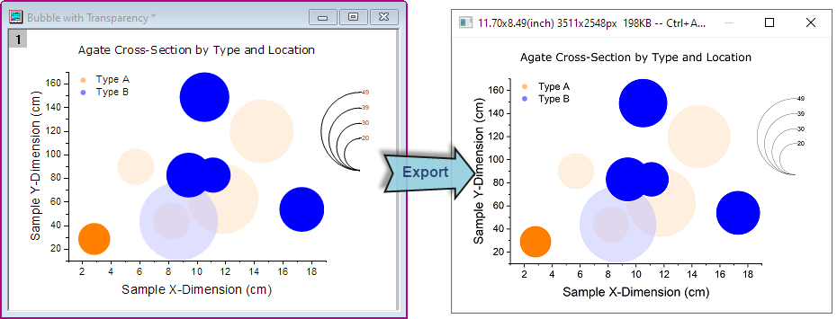
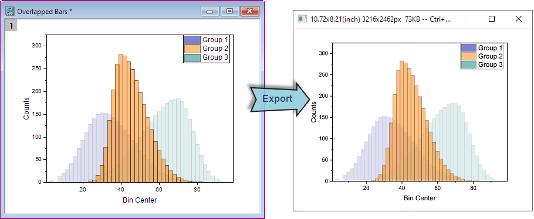
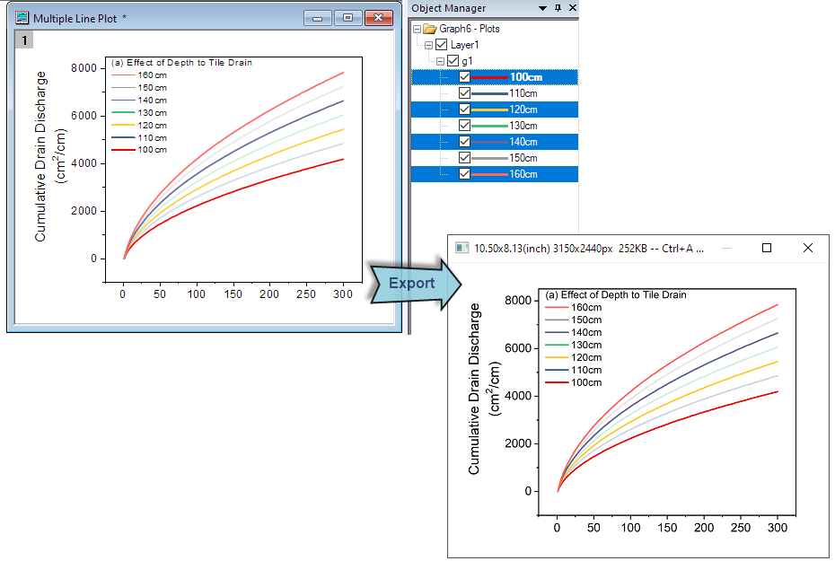

Grafik mit Markierungseffekt exportieren
Export-Highlight-Effect
Origin unterstützt das Exportieren der Effekte von Zeichnungsauswahl und Datenmarkierung in einem Diagramm mit den Hilfsmitteln Grafik exportieren oder Diagramm als Bild kopieren.
- Verwenden Sie das Hilfsmittel Datenmarkierung
 , um die Teile des Diagramms zu markieren, die exportiert werden sollen.
, um die Teile des Diagramms zu markieren, die exportiert werden sollen.
- 
- Klicken Sie, um eine Zeichnung in einer Grafik mit mehreren Zeichnungen auszuwählen und zu exportieren.
- 
- Verwenden Sie die Objektverwaltung, um mehrere Zeichnungen in einer Grafik auszuwählen und zu exportieren.
- 
 |
- Abgesehen vom Hilfsmittel Diagramm als Bild kopieren wird der Markierungseffekt auch beibehalten, wenn Sie die Funktion Diagramm kopieren verwenden und das Diagramm als Bild einfügen.
|